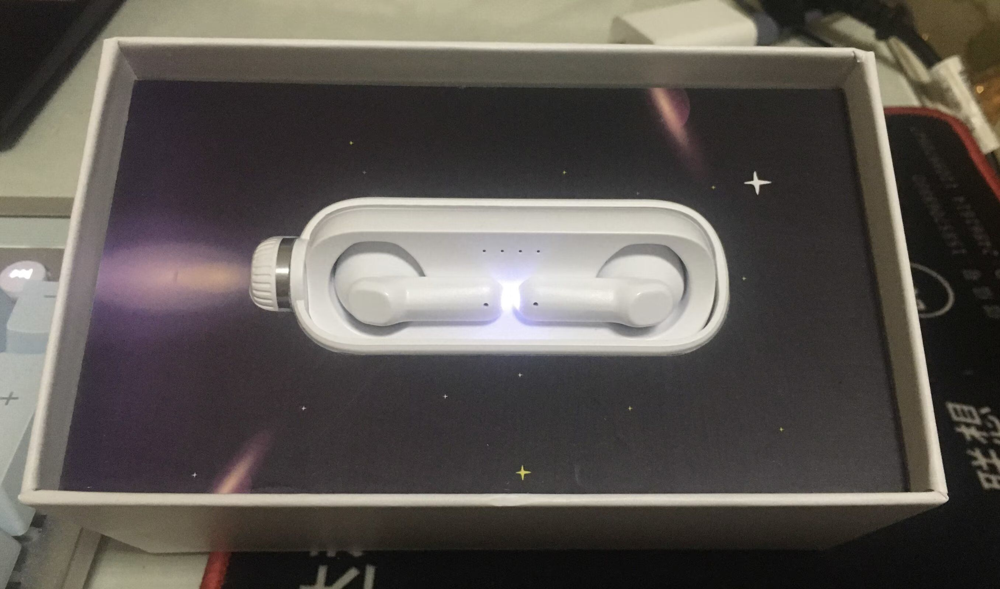

NANK 南卡小音舱
上上上个星期买的NANK小音舱在上上个星期到手了（虽然退掉了），稍微写写体验。
以下仅为个人感受，勿杠。杠就是你对。

先说要是让我打星，那就是1/5。一星好评。。
先说优点吧，这个“小音舱”的耳机仓确实漂亮又新奇，不过塑料感严重，关闭后指示灯透出来的感觉很差。
然后，额，大概就没了。
不知道是买到次品了还是怎么，我到手的这副真的体验相当差。
首先这是副蓝牙耳机，但是它蓝牙连接极不稳定，我就是坐在电脑前一动不动它都会频繁出现卡顿（就是一只耳机或者两只声音突然消失又马上恢复），连着MP3听歌时走起路来简直炸裂，tm跟切片似的。
其次就是它的音质。我看它的放出来和网友测出来的各种数据都表现很优秀，但感觉我那副跟这些完全搭不上边的样子。它的听感就是：低频拉贼高，直接盖过中频，整体听起来糊成一片，细节表现也拉胯。网上许多人推荐这幅耳机，各种夸，不知道我是不是真中奖拿到次品了。
还有一个就是我个人原因，不知道怎么回事，好像我左耳比右耳多张块肉似的，右耳戴起这个半入耳式耳机几乎没什么感觉，但左耳就痛得要命，真是奇怪。
于是我就退了。
然后换了副 Baseus 倍思 M2s。